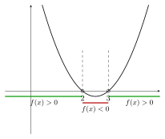
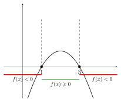
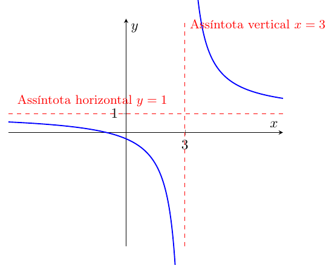
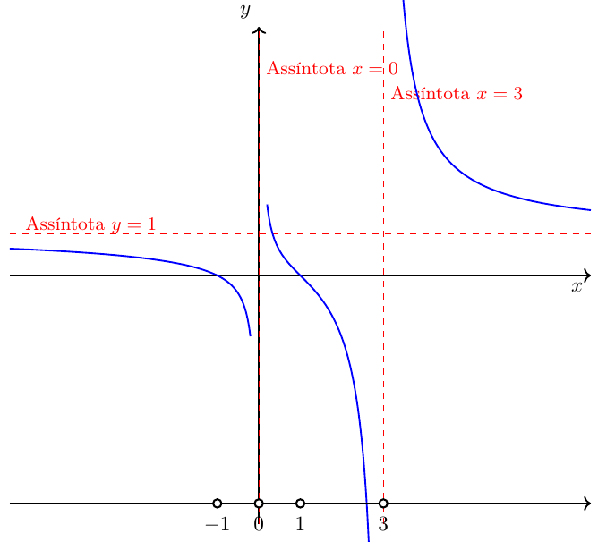

📘 Module 1.3: Intervals and Inequalities
← Back to Course Summary 🎓🧮 · ← Math Courses · ← Mathematics Section
🎯 Previous Post: 👉 1.2 Number Sets (Advanced)
1 Order in \(\mathbb{R}\)
Let \(a,b \in \mathbb{R}\): 1. \(a < b \iff b-a > 0\); 2. \(a > b \iff a-b > 0\).
1.1 Examples
- \(3<7\), since \(7-3=4>0\).
- \(-5<-2\), since \(-2-(-5)=3>0\).
Generic diagram:
2 Non-Strict Inequalities
Let \(a,b \in \mathbb{R}\):
- \(a \leqslant b \iff (a<b) \text{ or } (a=b)\);
- \(a \geqslant b \iff (a>b) \text{ or } (a=b)\).
- \(a<b\) and \(a>b\): strict inequalities.
- \(a\leqslant b\) and \(a\geqslant b\): non-strict inequalities.
3 Fundamental Theorems of Order
- \(a>0 \iff a\) is positive.
- \(a<0 \iff a\) is negative.
If \(a<b\) and \(b<c\), then \(a<c\).
- If \(a<b\), then \(a+c<b+c\).
- If \(a<b\) and \(c>0\), then \(ac<bc\).
- If \(a<b\) and \(c<0\), then \(ac>bc\).
If \(a<b\) and \(c<d\), then \(a+c<b+d\).
4 Chains of Inequalities
A number \(x\) is between \(a\) and \(b\) if \(a<x<b\).
Example: \(2<x<5\).
Other forms:
- \(a \leqslant x \leqslant b\) → closed interval;
- \(a \leqslant x < b\), \(a < x \leqslant b\) → half-open intervals.
5 Intervals
5.1 Open interval
\[(a,b) = \{x\in\mathbb{R}\mid a<x<b\}\]
5.2 Closed interval
\[[a,b] = \{x\in\mathbb{R}\mid a\leqslant x\leqslant b\}\]
5.3 Half-open intervals
\((a,b] = \{x \mid a<x\leqslant b\}\)
\([a,b) = \{x \mid a\leqslant x<b\}\)
5.4 Infinite intervals
\((a,+\infty) = \{x \mid x>a\}\)
\((-\infty,b) = \{x \mid x<b\}\)
\([a,+\infty) = \{x \mid x\geqslant a\}\)

\((-\infty,b] = \{x \mid x\leqslant b\}\)
\((-\infty,+\infty)=\mathbb{R}\)
6 Linear Inequalities
General form (with \(a \neq 0\)):
\[ \boxed{\, ax+b < c \,} \]
\[ \boxed{\, ax+b \leqslant c \,} \]
\[ \boxed{\, ax+b > c \,} \]
\[ \boxed{\, ax+b \geqslant c \,} \]
📌 Important note:
- If \(a=0\), the inequality reduces to a constant statement (\(b<c\), \(b\leqslant c\), etc.), with no variable.
- If \(a\neq 0\), we can isolate \(x\):
- For \(a>0\), the order is preserved.
- For \(a<0\), the inequality reverses its direction.
6.1 Cases with \(a>0\)
\(2x-3<5 \;\;\Rightarrow\;\; x<4\)
Solution: \((-\infty,4)\).\(3x+1\leqslant 7 \;\;\Rightarrow\;\; x\leqslant 2\)
Solution: \((-\infty,2]\).\(5x-4>11 \;\;\Rightarrow\;\; x>3\)
Solution: \((3,+\infty)\).\(4x+2\geqslant 10 \;\;\Rightarrow\;\; x\geqslant 2\)
Solution: \([2,+\infty)\).
6.2 Cases with \(a<0\)
\(-2x+3<7 \;\;\Rightarrow\;\; x>-2\)
Solution: \((-2,+\infty)\).\(-3x+1\leqslant -8 \;\;\Rightarrow\;\; x\geqslant 3\)
Solution: \([3,+\infty)\).\(-4x+5>1 \;\;\Rightarrow\;\; x<1\)
Solution: \((-\infty,1)\).\(-x-2\geqslant 5 \;\;\Rightarrow\;\; x\leqslant -7\)
Solution: \((-\infty,-7]\).
📌 Key summary:
- If \(a>0\), the inequality keeps its direction.
- If \(a<0\), the inequality reverses its direction.
- Example 1: \(2x-3<5\) (coefficient \(a>0\))
\[ \begin{aligned} 2x-3 &< 5 && \text{(given)}\\ 2x &< 5+3 = 8 && \text{(add 3 to both sides)}\\ x &< \frac{8}{2} = 4 && \text{(divide by 2>0, inequality preserved)} \end{aligned} \]
✅ Solution (interval): \((-\infty,4)\).
📌 Check: \(x=3 \Rightarrow 3<5\) (true); \(x=4 \Rightarrow 5\not<5\) (false).
- Example 5: \(-2x+3<7\) (coefficient \(a<0\))
\[ \begin{aligned} -2x+3 &< 7 && \text{(given)}\\ -2x &< 7-3 = 4 && \text{(subtract 3 from both sides)}\\ x &> \frac{4}{-2} = -2 && \text{(divide by -2<0, \textbf{reverse} the inequality)} \end{aligned} \]
✅ Solution (interval): \((-2,+\infty)\).
📌 Check: \(x=0 \Rightarrow 3<7\) (true); \(x=-2 \Rightarrow 7\not<7\) (false).
Teaching summary:
- Adding/subtracting: inequality preserved.
- Multiplying/dividing by a positive number: inequality preserved.
- Multiplying/dividing by a negative number: inequality reversed.
7 Quadratic Inequalities
General form (with \(a \neq 0\)):
\[ \boxed{ax^2 +bx + c < 0} \]
\[ \boxed{ax^2 +bx + c > 0} \]
\[ \boxed{ax^2 +bx + c \leqslant 0} \]
\[ \boxed{ax^2 +bx + c \geqslant 0} \]
Solve by analyzing the parabola \(y=ax^2+bx+c\).
📌 Example 1: \(x^2-5x+6>0\)
- Roots: \(x=2,3\)
- Parabola opens upwards.
- Positive sign outside of \((2,3)\).
- Solution: \((-\infty,2)\cup(3,+\infty)\).
Diagram on the real line:
Parabola graph: 
📌 Example 1: \(x^2-5x+6>0\)
Identification: quadratic inequality with \(a=1>0\), \(b=-5\), \(c=6\).
Associated equation:
\[ x^2 - 5x + 6 = 0 \]Discriminant (Δ):
\[ \Delta = b^2 - 4ac = (-5)^2 - 4\cdot 1 \cdot 6 = 25 - 24 = 1 \]Real roots:
\[ x = \frac{-b \pm \sqrt{\Delta}}{2a} = \frac{5 \pm 1}{2} \] Thus, \(x_1=2\) and \(x_2=3\).Sketch of the parabola: since \(a=1>0\), the parabola is concave upward.
Sign of the parabola:
- For \(x<2\), the parabola is above the axis (\(f(x)>0\)).
- For \(2<x<3\), the parabola is below the axis (\(f(x)<0\)).
- For \(x>3\), the parabola is again above the axis (\(f(x)>0\)).
- For \(x<2\), the parabola is above the axis (\(f(x)>0\)).
Conclusion (solution of the inequality \(f(x)>0\)):
\[ x \in (-\infty,2)\cup(3,+\infty) \]
Diagram on the real line:
Parabola graph and sign analysis:
📌 Example 2: \(-x^2+4x-3 \geqslant 0\)
Identification: quadratic inequality with \(a=-1<0\), \(b=4\), \(c=-3\).
Associated equation:
\[ -x^2+4x-3=0 \]Discriminant (Δ):
\[ \Delta = b^2-4ac = (4)^2 - 4\cdot(-1)\cdot(-3) = 16 - 12 = 4 \]Real roots:
\[ x=\frac{-b\pm\sqrt{\Delta}}{2a} = \frac{-4\pm 2}{-2} \] Thus, \(x_1=1\) and \(x_2=3\).Sketch of the parabola: since \(a=-1<0\), the parabola is concave downward.
This means the parabola is above the \(x\)-axis between the roots and below it outside.Sign of the parabola:
- For \(x<1\), \(f(x)<0\).
- For \(1\leqslant x\leqslant 3\), \(f(x)\geqslant 0\).
- For \(x>3\), \(f(x)<0\) again.
- For \(x<1\), \(f(x)<0\).
Conclusion (solution of the inequality \(f(x)\geqslant 0\)):
\[ x \in [1,3] \]
Diagram on the real line:
Parabola graph and sign analysis:

8 Product Inequalities
General form:
\[ \boxed{(x-a)(x-b) < 0} \]
\[ \boxed{(x-a)(x-b) > 0} \]
\[ \boxed{(x-a)(x-b) \leqslant 0} \]
\[ \boxed{(x-a)(x-b) \geqslant 0} \]
The solution is determined by the sign of the factors in each interval defined by the roots.
📌 Example 1: Positive product
Solve: \[
x(x-1) > 0
\]
- Roots: \(x=0\) and \(x=1\).
- Intervals: \((-\infty,0),\ (0,1),\ (1,+\infty)\).
- Sign test:
- For \(x<0\): both factors negative ⇒ product positive.
- For \(0<x<1\): one positive, one negative ⇒ product negative.
- For \(x>1\): both positive ⇒ product positive.
- For \(x<0\): both factors negative ⇒ product positive.
0$">
✅ Solution: \((-\infty,0)\cup(1,+\infty)\).
📌 Example 2: Negative product
Solve: \[
(x-1)(x+2) < 0
\]
- Roots: \(x=-2\) and \(x=1\).
- Intervals: \((-\infty,-2),\ (-2,1),\ (1,+\infty)\).
- Sign test:
- For \(x<-2\): both negative ⇒ product positive.
- For \(-2<x<1\): different signs ⇒ product negative.
- For \(x>1\): both positive ⇒ product positive.
- For \(x<-2\): both negative ⇒ product positive.
✅ Solution: \((-2,1)\).
9 Quotient Inequalities
General form:
\[ \boxed{\dfrac{f(x)}{g(x)} < 0,\quad g(x)\neq 0} \]
\[ \boxed{\dfrac{f(x)}{g(x)} > 0,\quad g(x)\neq 0} \]
\[ \boxed{\dfrac{f(x)}{g(x)} \leqslant 0,\quad g(x)\neq 0} \]
\[ \boxed{\dfrac{f(x)}{g(x)} \geqslant 0,\quad g(x)\neq 0} \]
The solution is determined by the sign chart of numerator and denominator.
9.1 📌 What are Asymptotes?
Let a rational function \(f(x)=\dfrac{p(x)}{q(x)}\).
- Vertical asymptote:
We say that \(x=a\) is a vertical asymptote if:- \(q(a)=0\) (the denominator vanishes at \(a\)); and
- \(p(a)\ne0\) (the numerator does not vanish at \(a\)).
In this case, \(f(x)\) is not defined at \(x=a\) and the graph of the function approaches a vertical line at \(x=a\).
- Horizontal asymptote:
We say that \(y=L\) is a horizontal asymptote if \[ \lim_{x\to\pm\infty} f(x) = L. \] This means that, for very large positive or negative values of \(x\), the graph of \(f(x)\) approaches the horizontal line \(y=L\).
📌 These concepts will be explored in detail in the Module on Rational Functions and, more rigorously, in the Module on Limits.
- In problems involving rational inequalities, the values that annihilate the denominator never belong to the solution, since the expression becomes undefined.
- Therefore, we treat these points as boundaries in the sign analysis, and call them vertical asymptotes.
- Horizontal asymptotes help describe the behavior at infinity of a rational function.
📌 Example 1: Positive quotient
Solve: \[
\frac{x+1}{x-3} > 0
\]
- Zeros: numerator \(x=-1\).
- Asymptote: denominator \(x=3\).
- Intervals: \((-\infty,-1),\ (-1,3),\ (3,+\infty)\).
- Signs:
- \((-\infty,-1)\): both negative ⇒ quotient positive.
- \((-1,3)\): numerator positive, denominator negative ⇒ quotient negative.
- \((3,+\infty)\): both positive ⇒ quotient positive.
- \((-\infty,-1)\): both negative ⇒ quotient positive.
0$">

✅ Solution: \((-\infty,-1)\cup(3,+\infty)\).
📌 Example 2: Quotient with more factors
Solve: \[
\frac{x^2-1}{x^2-3x} > 0
\]
\[ \frac{(x-1)(x+1)}{x(x-3)} > 0, \quad x\neq 0,3. \]
- Zeros/asymptotes: \(-1,\,0,\,1,\,3\).
- Intervals: \((-\infty,-1),\ (-1,0),\ (0,1),\ (1,3),\ (3,\infty)\).
- Sign test:
- \((-\infty,-1)\): positive.
- \((-1,0)\): negative.
- \((0,1)\): positive.
- \((1,3)\): negative.
- \((3,\infty)\): positive.
- \((-\infty,-1)\): positive.
0$">

✅ Solution: \((-\infty,-1)\cup(0,1)\cup(3,\infty)\).
- Represent on the real line:
- \((1,5]\)
- \((-\infty,-2)\)
- \([-3,3]\)
- \((1,5]\)
- Solve:
- \(3x+1\geqslant 7\)
- \(x^2-4\leqslant 0\)
- \((x-1)(x-4)<0\)
- \(3x+1\geqslant 7\)
- open dot at 1, closed dot at 5
- up to \(-2\) (open)
- closed from \(-3\) to \(3\)
- open dot at 1, closed dot at 5
- \([2,+\infty)\)
- \([-2,2]\)
- \((1,4)\)
- \([2,+\infty)\)
9.2 🧠 Review Exercises
Solve and write the solution in interval notation: \[ 1<2x+3\le 9 \]
\[ \begin{aligned} 1<2x+3\le 9 &\iff 1-3<2x\le 9-3 \\ &\iff -2<2x\le 6 \\ &\iff -1<x\le 3 \quad (\text{divide by }2>0) \end{aligned} \] Solution: \((-1,3]\).
Solve: \[ -3x+5\ge 2 \]
\[ \begin{aligned} -3x+5\ge 2 &\iff -3x\ge -3 \\ &\iff x\le 1 \quad (\text{divide by }-3<0 \Rightarrow \text{flip inequality}) \end{aligned} \] Solution: \((-\infty,1]\).
Solve: \[ x^2-x-6<0 \]
Factoring: \(x^2-x-6=(x-3)(x+2)\).
Roots: \(x=-2\) and \(x=3\). Since \(a=1>0\), the parabola is concave upwards.
Thus, \(f(x)<0\) between the roots: \[
x\in(-2,3).
\] Solution: \((-2,3)\).
Solve: \[ 2x^2+3x-2\ge 0 \]
Discriminant: \(\Delta=b^2-4ac=3^2-4\cdot2\cdot(-2)=9+16=25\).
Roots: \[
x=\frac{-3\pm\sqrt{25}}{2\cdot2}=\frac{-3\pm5}{4}\;\Rightarrow\;x_1=-2,\;x_2=\tfrac12.
\] With \(a=2>0\), the parabola is concave upwards; so \(f(x)\ge 0\) outside the interval between the roots (and includes the roots because it is \(\geqslant\)): \[
x\in(-\infty,-2]\cup\left[\tfrac12,\infty\right).
\] Solution: \((-\infty,-2]\cup[0.5,\infty)\).
Let \(A=(-\infty,4)\) and \(B=[1,7)\).
(a) \(A\cap B\) (b) \(A\cup B\)
\(A\cap B\): points that are in both.
\(A\) goes up to \(4\) (open), \(B\) starts at \(1\) (closed) and goes up to \(7\) (open).
Intersection: from \(1\) to \(4\), including \(1\) and excluding \(4\): \([1,4)\).\(A\cup B\): points that are in at least one.
The union covers from \(-\infty\) up to \(7\) open (since \(B\) already covers \([1,7)\) and \(A\) covers \((-\infty,4)\)): \((-\infty,7)\).
Answers: (a) \([1,4)\) (b) \((-\infty,7)\).
- Product: \(x(x-1)>0\)
Roots at \(x=0\) and \(x=1\). Since the leading coefficient is \(+1\), the product is positive outside the interval between the roots.
✅ Solution: \((-\infty,0)\cup(1,\infty)\).
- Product: \((x-1)(x+2)<0\)
Roots at \(x=-2\) and \(x=1\). Leading coefficient \(+1\) ⇒ negative between the roots.
✅ Solution: \((-2,1)\).
- Quadratic: \(x^2+4x-21>0\)
\(\Delta=4^2-4\cdot1\cdot(-21)=100\).
Roots: \(x=\tfrac{-4\pm10}{2}\Rightarrow x=-7,\,3\).
Parabola opens upwards ⇒ \(>0\) outside.
✅ Solution: \((-\infty,-7)\cup(3,\infty)\).
- Quadratic: \(2x^2+x<3\)
\(2x^2+x-3<0\).
\(\Delta=1+24=25\).
Roots: \(x=\tfrac{-1\pm5}{4}\Rightarrow x=-\tfrac32,\,1\).
\(<0\) between the roots.
✅ Solution: \(\left(-\tfrac32,\,1\right)\).
- Quadratic: \(4x^2+10x-6<0\)
\(\Delta=10^2-4\cdot4\cdot(-6)=196\).
Roots: \(x=\tfrac{-10\pm14}{8}\Rightarrow x=-3,\,\tfrac12\).
\(<0\) between the roots.
✅ Solution: \((-3,\,\tfrac12)\).
- Quadratic: \(x^2+2x+4>0\)
\(\Delta=2^2-4\cdot1\cdot4=-12<0\) and \(a=1>0\) ⇒ the expression is always positive.
✅ Solution: \(\mathbb{R}\).
- \(\sqrt{4-x^2}\)
We require \(4-x^2\ge0 \Rightarrow -2\le x\le 2\).
✅ Solution: \([-2,2]\).
- \(\dfrac{1}{\sqrt{4-3x}}\)
The radicand must be positive (and the denominator \(\ne0\)): \(4-3x>0 \Rightarrow x<\tfrac43\).
✅ Solution: \((-\infty,\tfrac43)\).
- \(\dfrac{1}{\sqrt{x^2-x-12}}\)
We require \(x^2-x-12>0\Rightarrow(x-4)(x+3)>0\) ⇒ outside the roots.
✅ Solution: \((-\infty,-3)\cup(4,\infty)\).
- \(\dfrac{x}{x^2+4}>0\)
Denominator \(x^2+4>0\) for all \(x\). Sign of the fraction = sign of \(x\).
✅ Solution: \((0,\infty)\).
- \(\dfrac{x}{x^2-4}>0\)
Critical points: \(x=0,\pm2\) (undefined at \(\pm2\)). Sign chart ⇒ positive on \((-2,0)\) and \((2,\infty)\).
✅ Solution: \((-2,0)\cup(2,\infty)\).
- \(\dfrac{x+1}{x-3}>0\)
Zero: \(-1\). Asymptote: \(3\). Sign by intervals ⇒ \((-\infty,-1)\) and \((3,\infty)\).
✅ Solution: \((-\infty,-1)\cup(3,\infty)\).
- \(\dfrac{x^2-1}{x^2-3x}>0\)
\(\dfrac{(x-1)(x+1)}{x(x-3)}>0\), with \(x\ne0,3\). Critical points: \(-1,0,1,3\).
Signs ⇒ \((-\infty,-1)\cup(0,1)\cup(3,\infty)\).
✅ Solution: \((-\infty,-1)\cup(0,1)\cup(3,\infty)\).
- \(x^2<4\)
\(-2<x<2\).
✅ Solution: \((-2,2)\).
- \(x^2+3x-4>0\)
\((x+4)(x-1)>0\) ⇒ outside the roots.
✅ Solution: \((-\infty,-4)\cup(1,\infty)\).
- \(x^2+6x+8\le0\)
\((x+2)(x+4)\le0\) ⇒ between the roots, including them.
✅ Solution: \([-4,-2]\).
- \(x^2<5x+14\)
\(x^2-5x-14<0\Rightarrow(x-7)(x+2)<0\) ⇒ between the roots.
✅ Solution: \((-2,7)\).
- \(2x^2>x+6\)
\(2x^2-x-6>0\). \(\Delta=49\). Roots: \(-\tfrac32\) and \(2\).
\(>0\) outside.
✅ Solution: \((-\infty,-\tfrac32)\cup(2,\infty)\).
- \(6x^2+13x<5\)
\(6x^2+13x-5<0\). \(\Delta=289\). Roots: \(-\tfrac52\) and \(\tfrac13\).
\(<0\) between.
✅ Solution: \((-\tfrac52,\,\tfrac13)\).
- \(x^3+3x^2>10x\)
\(x(x^2+3x-10)=x(x+5)(x-2)>0\).
Sign chart with critical points \(-5,0,2\) ⇒
✅ Solution: \((-5,0)\cup(2,\infty)\).
- \(-4<2-x<7\)
Adding \(-2\): \(-6<-x<5\). Multiplying by \(-1\) (inequality flips): \(6>x>-5\).
✅ Solution: \((-5,6)\).
- \(\dfrac{2x-1}{x}<3\)
\[
\frac{2x-1}{x}-3=\frac{-x-1}{x}<0 \ \Longleftrightarrow\ \frac{x+1}{x}>0.
\] Critical points: \(-1,0\). Signs ⇒ positive on \((-\infty,-1)\) and \((0,\infty)\).
✅ Solution: \((-\infty,-1)\cup(0,\infty)\).
- \(\dfrac{x}{x+2}<1\)
\[
\frac{x}{x+2}-1=\frac{-2}{x+2}<0 \ \Longleftrightarrow\ \frac{2}{x+2}>0
\] (numerator \(>0\)) ⇒ \(x+2>0 \Rightarrow x>-2\), with \(x\ne-2\).
✅ Solution: \((-2,\infty)\).
10 🔎 Summary Sheet — Module 1.3 (Order, Intervals, and Inequalities)
- \(a<b \iff b-a>0\); \(a>b \iff a-b>0\).
- \(a\le b \iff (a<b \text{ or } a=b)\); \(a\ge b \iff (a>b \text{ or } a=b)\).
- Strict inequalities: \(<,>\). Non-strict: \(\le,\ge\).
- Addition: \(a<b \Rightarrow a+c<b+c\).
- Product with \(c>0\): inequality preserved.
- Product with \(c<0\): inequality reversed.
- Transitivity: if \(a<b\) and \(b<c\), then \(a<c\).
- Open: \((a,b)=\{x\mid a<x<b\}\).
- Closed: \([a,b]=\{x\mid a\le x\le b\}\).
- Half-open: \((a,b],\ [a,b)\).
- Infinite: \((a,\infty),\ (-\infty,b),\ [a,\infty),\ (-\infty,b]\).
General form: \(\boxed{\,ax+b\ \{<,\le,>,\ge\}\ c\,}\)
- Isolate the term \(ax\) (add/subtract on both sides).
- Divide by \(a\). If \(a<0\), flip the inequality.
- Write the solution in interval notation and test a value if useful.
- Study the sign of \(f(x)=ax^2+bx+c\) using roots and concavity.
- \(\Delta=b^2-4ac\).
- If \(a>0\): \(f(x)\) is \(>0\) outside the roots and \(<0\) between.
- If \(a<0\): behavior reversed.
- Solve \(ax^2+bx+c=0\) (factor/Quadratic Formula).
- Mark the roots on the number line and note concavity (sign of \(a\)).
- Select the intervals satisfying \(>,\ge,<,\le\).
- Include the roots if the inequality is non-strict (\(\ge,\le\)).
- Type: \((x-a)(x-b)\ \{<,>,\le,\ge\}\ 0\).
- Rule: build a sign chart of factors; the product is \(+\) if an even number of negatives, \(−\) if odd.
\(x(x-1)>0 \Rightarrow (-\infty,0)\cup(1,\infty)\).
(Roots \(0,1\); signs: \(+,-,+\); we want \(+\) → outside the interval.)
- Type: \(\dfrac{f(x)}{g(x)}\ \{<,>,\le,\ge\}\ 0\), with \(g(x)\ne0\).
- Rule: signs are split by zeros of \(f\) (numerator) and asymptotes \(g=0\) (excluded!).
- Quotient is \(+\) if numerator and denominator share the same sign; \(−\) if signs are opposite.
\(\dfrac{x+1}{x-3}>0 \Rightarrow (-\infty,-1)\cup(3,\infty)\).
(Criticals \(-1\) [zero] and \(3\) [asymptote]; signs: \(+,-,+\); we want \(+\).)
- Forgetting to flip the inequality when dividing by a negative number.
- Including asymptotes (\(g(x)=0\)) in quotients.
- Not checking if the root is included when the relation is \(\ge\) or \(\le\).
- Losing critical points when simplifying common factors (note restrictions first!).